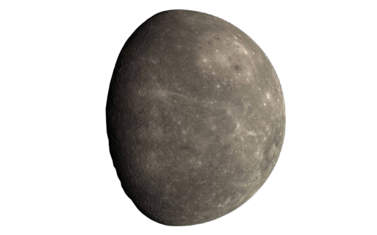

DISCOVER MERCURY
Step into the scorching world of Mercury.
Uncover its sun-baked dust, pockmarked craters, global magnetic field, and the secrets of its icy polar shadows.
Step into the scorching world of Mercury.
Uncover its sun-baked dust, pockmarked craters, global magnetic field, and the secrets of its icy polar shadows.

Mercury, the fleet-footed, innermost planet of our solar system, is a world of extreme, volatile temperatures and a lunar-like, heavily cratered
surface that challenges our understanding of planetary formation and provides a stark test for spacecraft
attempting to study its massive iron core.Mercury is the smallest planet in our solar system and the closest to the Sun. Despite being the nearest to our star, it's not the hottest planet - that title goes to Venus. Mercury is a world of extremes with scorching days and freezing nights.
Mercury is only slightly larger than Earth's Moon and is the smallest planet in our solar system. Despite its small size, Mercury is dense and compact, making it the second-densest planet after Earth.
Mercury has the second-highest density of any planet due to its large iron core, which makes up about 75% of the planet's radius. On Mercury, you would weigh only 38% of your Earth weight.
Mercury has essentially no atmosphere, only an exosphere made of atoms blasted off its surface by solar wind and micrometeorite impacts. This means no weather, no clouds, and no protection from space debris.
Despite its proximity to the Sun, Mercury has water ice in permanently shadowed craters at its poles! Other discoveries include mysterious "hollows" (bright depressions), evidence that the planet has shrunk, and a weak but active magnetic field.
Mercury experiences the most extreme temperature swings in the solar system - a whopping 610°C difference between day and night! Without an atmosphere to trap heat, temperatures plummet rapidly after sunset.
Mercury's surface is heavily cratered like the Moon, preserving a 4-billion-year record of impacts. The planet has shrunk over time as its core cooled, creating enormous cliffs called scarps that run for hundreds of kilometers.
Mercury zips around the Sun faster than any other planet at 47.87 km/s (107,000 mph)! Its orbit is also the most elliptical, taking it from 46 to 70 million km from the Sun. This helped prove Einstein's theory of relativity.
Mercury has no moons or natural satellites. Its proximity to the Sun and high orbital speed make it extremely difficult for Mercury to capture and hold onto a moon - the Sun's gravity would pull it away.
Mercury is one of the least-explored planets due to the difficulty of reaching it. Getting into Mercury orbit requires slowing down tremendously against the Sun's gravity. BepiColombo will be only the third mission to visit.